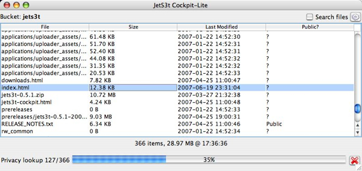
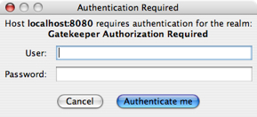
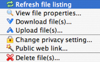

JetS3t CockpitLite
CockpitLite is a graphical Java application for viewing and managing the contents of an Amazon S3 account, where the S3 account is not owned by the application's user directly but is made available by a service provider. The service provider uses the Gatekeeper application to mediate the user's access to the S3 account, authorizing each of the user's interactions before it can be executed. The end user does not need to have an S3 account, and does not need to know or care how the online storage is provided.
CockpitLite can perform most S3 operations except for bucket management. It uses signed URLs to perform all operations, so the application user can access and use an S3 account without requiring access to the account's AWS credentials. By configuring the Gatekeeper application that mediates access to the account, service providers can obtain a fine degree of control over which operations can be performed by particular users.
There is no demonstration version of CockpitLite available online. To test this application, you must download the JetS3t distribution, deploy and configure your own Gatekeeper servlet, then run the CockpitLite applicataion locally.

CockpitLite offers the following capabilities:
- Manage objects in a mediated Amazon S3 account. CockpitLite can upload, download, and delete objects
- Simple Access Control List (ACL) permission management allows users to make objects public or private
- Configurable user input fields
- Works with Gatekeeper server-side authentication servlet
- Uses sophisticated file comparison techniques to determine whether files have changed prior to uploading or downloading them, preventing unnecessary or accidental transfers
CockpitLite Users Manual
Running CockpitLite
CockpitLite may be run as a stand-alone application or as a browser applet. However, there is no publicly-available applet version.
To obtain the stand-alone version download the JetS3t distribution and unzip the archive on your machine. Cockpit can then be run using the included cockpitlite start scripts located in the "bin" directory.
Log in
When CockpitLite starts, a welcome page is displayed reminding you that a Gatekeeper servlet must be running and available for the application to work. If the Gatekeeper is available, CockpitLite will contact it once you click the Log In button.
If the Gatekeeper is configured to require user authentication, such as a HTTP Basic login or similar, you must enter your login credentials before the application can communicated with the Gatekeeper.

Manage objects
The object management operations are available in a drop-down menu that is displayed when you click on the gear icon. You can upload files to S3 by dragging-and-dropping them on the application, or by using the Object Menu as described below.
Object Menu

The Objects menu shows all the operations you can
perform on your objects.
For convenience this menu can also be displayed as a
context menu if you right-click an object in the list.
- Refresh file listing: When CockpitLite lists the contents of a bucket, it caches the list of objects to avoid having to look them up again. Use this menu item to refresh your object listing manually, to be sure it is up-to-date.
- View file properties...: Displays objects'
properties, such as their size, content type, and all
metadata items.
- Download file(s)...: This menu item will prompt for a target directory, then download all the selected objects into that directory.
- Upload file(s)...: This menu item will prompt you to choose some files and/or folders on your computer to upload to S3.
- Change privacy setting...: Toggle an object's ACL settings between private and public. Public objects are accessible to everyone, while private objects are only accessible to the S3 account owners and those allowed to access the account via the Gatekeeper.
- Public web link...: Provides a URL that refers to the selected object, which can be used in a web browser to access that object. This operation is only available when the object is marked as Public.
- Delete file(s)...: Deletes the currently selected object or objects, after prompting for confirmation.
Upload files to S3
You upload files to S3 by either dragging-and-dropping files onto the appliction, or selecting the Object Menu item Upload file(s).... Before uploading, CockpitLite examines the files (this may take some time for large files) and uploads them to S3 provided there are no clashes. The application displays a progress dialog during uploads showing how much of the total data has been uploaded. Uploads can be cancelled at any time.
Download files from S3
CockpitLite does not allow files to be downloaded using drag-and-drop. To download files from S3 you must select the objects you want, then choose the Object Menu item Download file(s).... Before downloading Cockpit compares any files present in the target location against the objects in S3 and detects any clashes.
Automatic File Comparisons
CockpitLite automatically compares files that are being uploaded or downloaded with files in the destination to detect clashes. When a file with the same name exists on the target, CockpitLite determines whether the file has changed, and if so which version of the file is the most recent.
Each file is given one of the following status types:
- New File: The file does not exist in the destination
- Unchanged: The file is identical to the copy in the destination
- Changed: The file has been changed
If there are Unchanged or Changed files, the Replace file(s) dialog is displayed. This dialog allows you to choose which clashing files in the destination should be replaced, if any. The options available may include the following:
- Only upload/download new file(s): Only files that do not already exist in the destination will be uploaded or downloaded. No existing file will be over-written.
- Upload/download new and changed file(s): New files and changed files will be transferred, but files that are unchanged will not be transferred. Only out-dated files will be over-written.
- Upload/Download all files: All the files will be uploaded or downloaded, regardless of what files are in the destination. Any existing files will be over-written.
File comparisons are performed using MD5 hashes of the file contents.